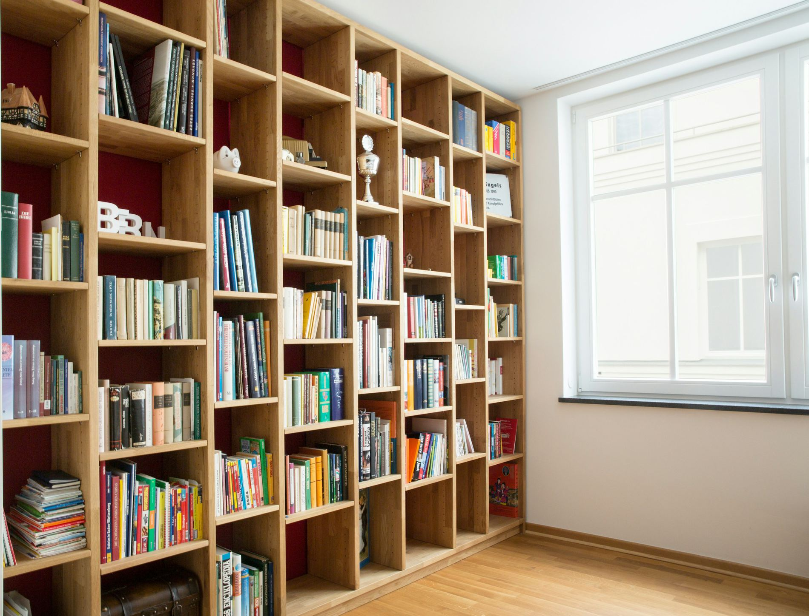
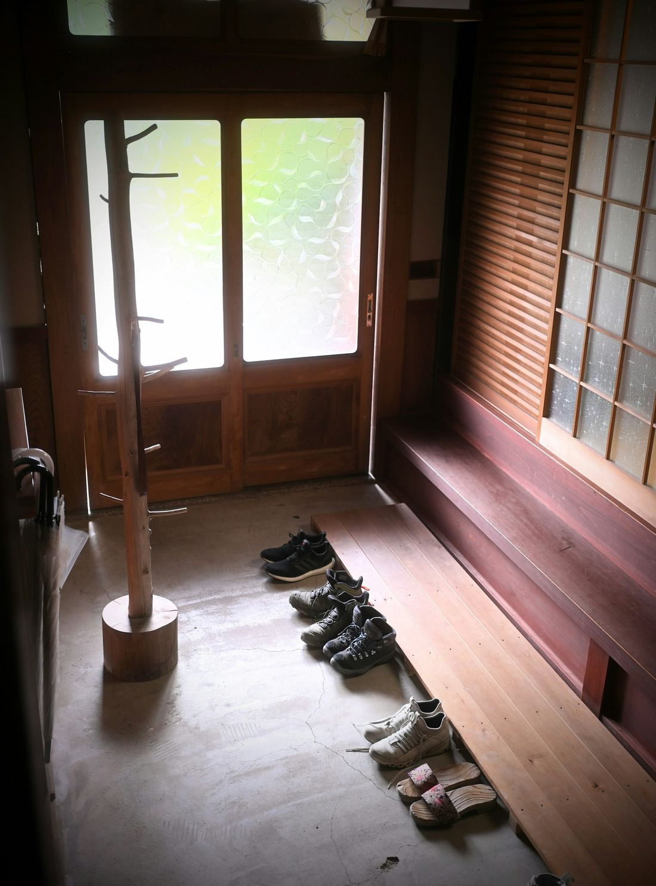
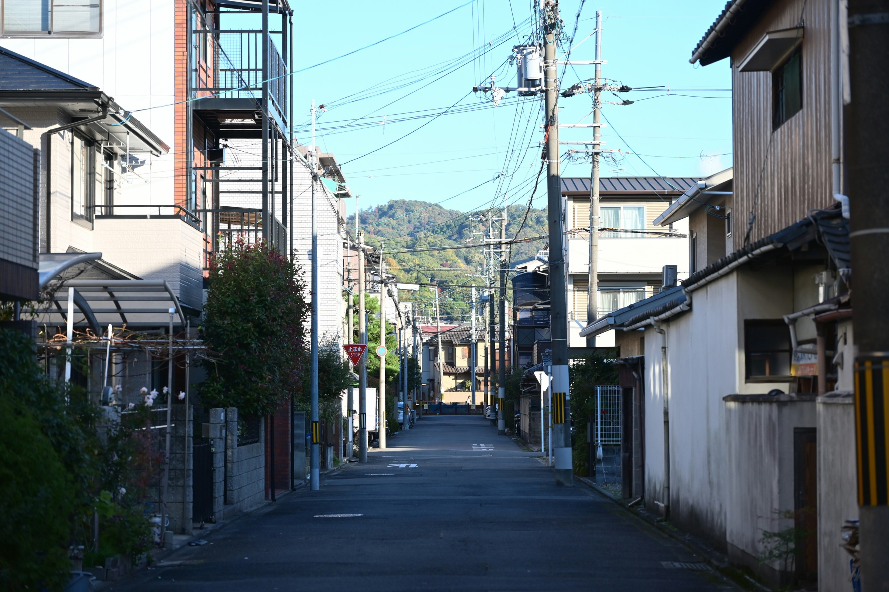

しらさぎ台地区 防災ボランティアの会第2回 地域防災講習会
しらさぎ台地区にお住まいの方へ
家具の転倒防止、非常持ち出し袋の作り方、AEDの使い方。
日曜の午前、2時間で学ぶ防災講習会です。参加費は無料です。
11月15日（日）午前10時～正午しらさぎ台地区センター
この家具、もし揺れたら？
防災の情報公的機関の資料より
「地震時に3割～5割の人が、直接家具等が当たったり、つまずいて転んだり等でけがをしています。」東京消防庁「命を守る家具転対策」（平成27年5月）
消費者庁「子ども安全メール Vol.546」（2021年3月）より
11月15日（日）の講習会では、「家具の転倒防止の方法」を学びます。

3
そのとき持って出られるのは、玄関の近くにあるものだけかもしれません。
防災の情報公的機関の資料より
「すぐ取り出せるところに非常持出品を準備しておきましょう。」横浜市「備蓄について」（2024年11月1日更新）
横浜市「備蓄について」より（2026-10-19 確認）。品目は資料のとおりで、すべてではありません。
一度に全部そろえなくても、まずは玄関の近くに、ひとつずつ。
11月15日（日）の講習会では、「非常持ち出し袋の作り方」を学びます。

4
いつもの、家の近くの道で。
少し先で、人が倒れました。あなたは駆け寄ります。
近くには、あなたしかいません。
そこへもうひとり、駆けつけた人があなたに聞きます。
「あなた、AED使えますか？」
すぐに「はい」と言えなくても、最初の一歩は、知っておくことができます。
防災の情報公的機関の資料より
「平成16年に非医療従事者による自動体外式除細動器（ＡＥＤ）の使用が認められたことを契機に、（中略）現場に居合わせた人（バイスタンダ－）が応急手当を行うことで、生存率や社会復帰率の向上が期待される。」総務省消防庁「令和7年版 救急・救助の現況」はじめに
札幌市消防局「一次救命処置（1歳以上から大人）」より（2023年1月30日更新、2026-10-19 確認）
呼吸の確認、胸骨圧迫、AEDの使い方には、ここに書ききれない正しい手順があります。必ず公的機関の資料や救命講習で確かめてください。
あの問いに、少しでも答えられるように。
家具のこと、持ち出し袋のこと、AEDのこと。
第2回 地域防災講習会 しらさぎ台地区 防災ボランティアの会
締切 11月10日（火）
このページからは申し込めません。回覧板の申込用紙でお申し込みください。
駐車場には限りがありますので、なるべく徒歩でお越しください（チラシより）。